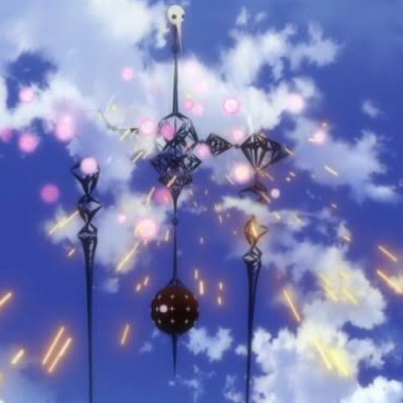

7th Angel

『破』に登場。第4の使徒や第5の使徒とほぼ共通の頭部を備えた時計のオブジェのような本体と、それを支える長細い脚部から構成され、全体的に水飲み鳥のような形状を持つ。二本の足で海面を歩くことができ、この時海面が凍結する。頭部を変形させて放つ触手状の光線を武器とする他、胴体にコアのデコイを有しており、これを破壊されると一瞬体勢を崩すが、本物のコアを内蔵した下部の球形部分が上部へと移動したうえで復活する。
(Wikipediaより)